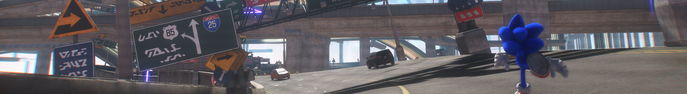

Desafíate a ti mismo en el ciberespacio
Descubre portales dispersos por toda la isla y aventúrate en los niveles del ciberespacio a
través
de portales repartidos por las islas con plataformas 3D exclusivas a velocidades de Sonic,
repletas
de desafíos para poner a prueba tus habilidades.

Experimente las nuevas plataformas de zona abierta
Corre a través de cinco enormes islas del mundo rebosantes de densos bosques,
cascadas desbordantes
y paisajes desérticos chisporroteantes,
cada uno con sus propios desafíos únicos
de plataformas de
acción y secretos ocultos por descubrir.
Combate cibernético en alta velocidad
Las Islas Starfall son el hogar de extrañas criaturas que Sonic nunca ha encontrado antes. Usa
el nuevo sistema de batalla y las mejoras del árbol de habilidades para luchar estratégicamente,
combinando movimientos como esquivas, parries, contadores, combos y la nueva habilidad Cyloop
para
derrotar
enemigos misteriosos y titanes colosales.